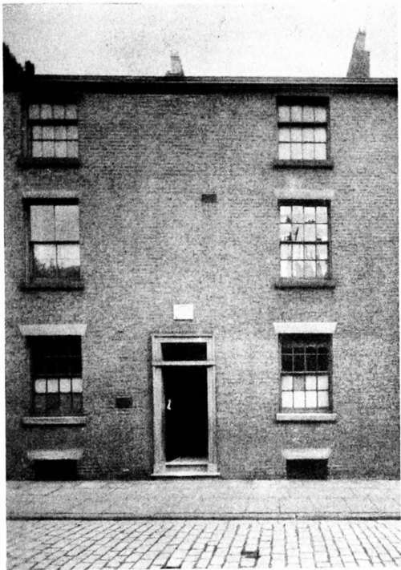

The Child. Part 2
Description
This section is from the book "The Life Of Francis Thompson", by Everard Meynell. Also available from Amazon: The life of Francis Thompson.
The Child. Part 2
The paternal relative (a cousin once removed) who finds in Francis thoughts and yearnings habitual to other members of his father's family, is better able to note them than he was. She tracks them in a girl (never seen by Francis) whose tragedy, since seeking admittance to a convent and failing to take final vows, is that she is not physically fit for the only life tolerable to her. She recognises the family mannerism in a relative who is famous in the suburban street of his choice for reciting the Psalms in a mighty voice in his sleep, so that no rest visits the guest new to the household noises.
1 At the Convent of the Holy Child, St. Leonard's-on-Sea.
The Poet's Birthplace No. 7, fVinckley Street, Preston
Family Likenesses
She sees the family characters in Francis's niece who is about to end her noviciate and take vows in a Canadian community. She notes them in the two aunts, the sisters of Charles Thompson, who as Sister Mary of St. Jane Frances de Chantal of the Order of the Good Shepherd, and Sister Mary Ignatius of the Order of Mercy, lived and died as nuns; of a third aunt nothing is known, but in a dozen other cases the inclination for a spiritual life or a disinclination for all the pleasures or successes of any other is apparent. She notes the same carelessness for worldly prosperity, the thoughtlessness for mundane concerns that goes with certain trains of spiritual speculation. In a family singularly scattered the family trait is for ever reappearing. The aloofness or vagueness that led Francis to lose himself in London was responsible for many lost addresses. As Francis wandered alone in the Strand, without knowing that he had relatives in Church Court within a stone's throw of his stony and uncovered bed, so do the brothers and sisters of the present generation inhabit London and its suburbs unknown to one another, but without real alienation or unkindness. She, the cousin here cited, has herself wished to enter a convent and failed, and knowing much of the family needs and inclinations, does not doubt that Francis's life-long trouble was that he failed in the attempt to be a priest. There is nothing to throw substantial discredit on such a reading of his career.
From Winckley Street, associated with none of Francis's conscious experiences of existence, the family moved to Winckley Square and to Lathom Street, Preston, and in 1864 to Ashton-under-Lyne, where they remained until Francis's flight to London twenty-one years later.
" Know you what it is to be a child ? " asks Thompson in his essay on Shelley; the answer tells us what it was to be the child Francis : " It is to have a spirit yet streaming from the waters of baptism; it is to believe in love, to believe in loveliness, to believe in belief ;fit is to be so little that the elves can reach to whisper in your ear it is to turn pumpkins into coaches, and mice into horses, lowness into loftiness, and nothing into everything, for each child has its fairy godmother in its own soul; it is to live in a nutshell and to count yourself the king of infinite space ; it is
To see a world in a grain of sand, And a heaven in a wild flower, Hold infinity in the palm of your hand, And eternity in an hour; it is to know not as yet that you are under sentence of life, nor petition that it be commuted into death. When we become conscious in dreaming that we dream, the dream is on the point of breaking ; when we become conscious in living that we live, the ill dream is but just beginning." Francis was early alive. In a note-book he says: " Yes, childhood is tragic to me. And then critics complain that I do not write 'simply' about it. O fools! as if there was anything more complex, held closer to the heart of mystery, than its contemplation." He forgot perhaps that even fools have experienced the dereliction and despair which catches at all children at some time or another. It is improbable that he suffered, but possible that he remembered, more than other children.
Having attended for two months the school of the Nuns of the Cross and the Passion-a name full of anticipations-he reached, in the cold phrase that admits to first Confession and Communion, the " age of discretion." At seven years he was reading poetry, and, overwhelmed by feelings of which he knew not the meaning, had found his way to the heart of Shakespeare and Coleridge : their three ages of discretion kept company.
He Reaches The Age Of Discretion
Already seeking the highway and the highway's seclusion, he would carry his book to the stairs, where, away from the constraint of chairs and tables and the unemotional flatness of the floor, his sister Mary remembers him. It is on that household highway, where the voices and noises of the house, and the footsteps of passengers on the pavement beyond the dark front door, come and pass quickly into other regions, that the child meditates and learns. There he may contract the habit of loneliness, populate his fancy with the creatures of fear; and gather about him a company of thoughts that will be his intimates until the end. And all the thronging personages of the boy's imagination are perhaps darkly arrayed against him. The crowd will be of tremors rather than of smiles, of secret rather than open-handed truths; the lessons learnt in that steep college of childhood are not joyful. The " long tragedy of early experiences " of which he spoke was a tragedy adventured upon alone. With his mother and his sisters, their toys, his books, and his own inventions he was happy. He would give entertainments to a more or less patient and tolerant audience of sisters ; conjuror's tricks, and a model theatre on whose stage he would dangle marionettes, were the favourite performances, to one of which he was beholden for amusement and occupation till the end of his life. His early experience of the tragedy cannot be traced to the nursery. It was not there he built his barricade, or became in his own words "expert in concealment, not expression, of myself. Expression I reserved for my pen. My tongue was tenaciously disciplined in silence." There befell some share of accidental alarm. In a note-book that he had by him towards the end of his life and in which there are many allusions to its beginnings, he wrote of the " world-wide desolation and terror of for the first time, realising that the mother can lose you, or you her, and your own abysmal loneliness and helplessness without her." Such a feeling he compares to that of first fearing yourself to be without God.
Continue to: